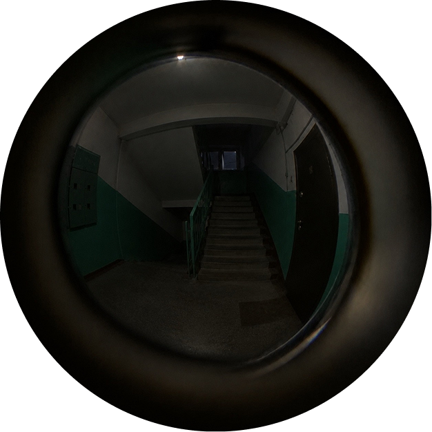
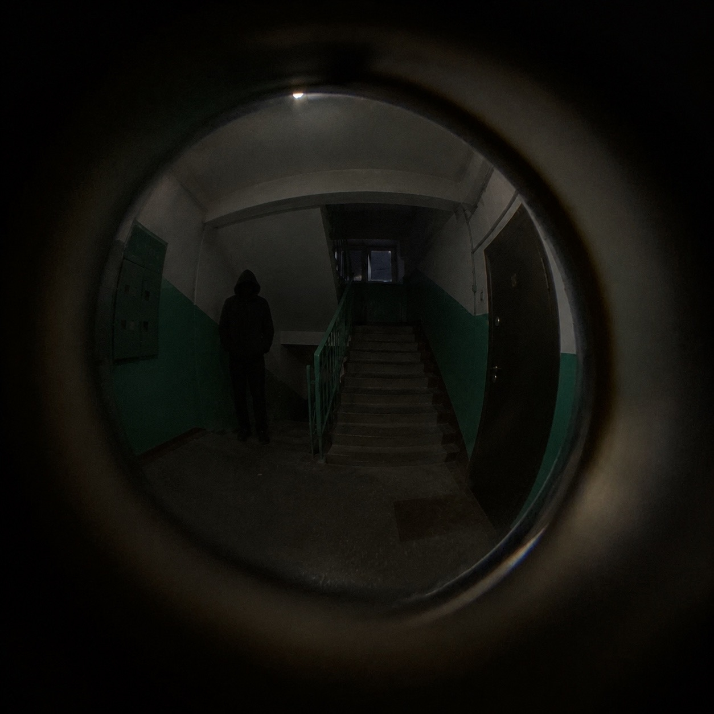
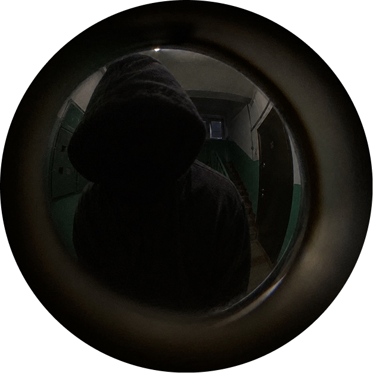

Где твой сталкер?
лонгрид о феномене сталкерства
Неизвестный
Листай, не стесняйся. Тут ещё сообщения.
Перед нами один из конкретных примеров сталкинга. Ежегодно в России со сталкингом сталкивается около 30 миллионов человек. 18 миллионов женщин и 12 миллионов мужчин.
Интересно, сколько из них до последнего думали, что это просто совпадение.
Миллионы людей, которые оглядывались на улице, боялись открыть новое сообщение и не чувствовали себя в безопасности там, где раньше им было спокойно.
Неизвестный
Ну давай, листай. Это ещё не всё.
Будь внимательнее. Выбери картинку,
на которой видишь его.
Будь внимательнее. Выбери картинку,
на которой видишь его.
Будь внимательнее. Выбери картинки, на
которых видишь его.
Довольно жутко, правда? Один из самых пугающих видов сталкинга — преследование в реальной жизни. Сталкер может следовать за вами по улицам, появляться у дома. В некоторых случаях такое преследование становится реальной угрозой для жизни.
Если вам кажется, что за вами следят, направляйтесь домой: так вы можете раскрыть свой адрес. Зайдите в людное место, при непосредственной опасности обратитесь в экстренные службы. Не пытайтесь противостоять преследователю в одиночку. Ваш приоритет — добраться до безопасного места.
Текст читаешь, а меня почему-то игнорируешь и блокируешь, несправедливо...
Если вы уже в подъезде и подозреваете, что сталкер находится рядом, не выдавайте, в какой именно квартире вы находитесь. Запирайте входную дверь на замок, открывайте её незнакомцу и вступайте с ним в контакт. Не включайте свет. Ведите себя тихо. Это всё равно не поможет, вам уже вообще ничего не поможет.
Дома есть кто-то помимо тебя?
Дай мне тебя увидеть.
У тебя есть 15 секунд, чтобы проверить, закрыта ли дверь.
Время идёт.
Ты запер дверь?
Я разве уточнял, что это входная дверь?
Может я говорил про балконную дверь.
Или про дверь в твою комнату.
Почему не даёшь доступ к микрофону?
Ха-ха, ладно, расслабься. Я просто проверял твои нервы. Ты же не всерьёз веришь во всё это? Просто решил немного тебя напугать. Представляешь, что было бы, если бы за тобой действительно следил сталкер?
Кстати, есть мнение, что некоторые сталкеры получают удовольствие не столько от самого преследования, сколько от осознания того, что их жертва боится. Забавно, правда? Хотя не знаю, зачем я тебе это рассказываю. Ладно, хватит с тебя страшилок. Всё хорошо, ты в безопасности. Можешь выдохнуть.
Полина (разработчик)
Ну что, листай дальше. Там ещё кое-что…
Так, спокойно, кажется, мы разобрались. Информация о постороннем человеке на сайте оказалась ложной. Никакого взлома не было, просто из-за перегруженного кода произошёл сбой, и система начала выдавать некорректные сообщения.
Полина только что связалась со мной и подтвердила, что всё под контролем. Больше никаких неожиданных сообщений быть не должно. Теперь можем спокойно продолжить нашу историю.
Продолжим. Кстати, сталкинг далеко не всегда начинается с открытых угроз. Нередко преследование поначалу выглядит как обычное внимание: частые сообщения, случайные встречи, попытки узнать, где человек находится и с кем проводит время. Именно поэтому бывает сложно сразу распознать навязчивое поведение.
Главный признак сталкинга — систематическое нарушение личных границ, когда человек продолжает добиваться контакта, несмотря на очевидное нежелание другого общаться.
Дома есть кто-то посторонний?
Кто-то сейчас есть в твоём шкафу?
У тебя есть 10 секунд, чтобы:
Знаешь, самое забавное во всём этом? Неважно, какой вариант ты выберешь. Ты ведь правда думаешь, что от твоих решений что-то зависит? Что ты можешь изменить ход событий, избежать опасности? Нет. Это просто сайт. Набор картинок, текста и строчек кода. Здесь ничего не может тебе навредить. Ты в любой момент можешь закрыть вкладку и вернуться к своей обычной жизни.
Правда, есть одна маленькая деталь, которую я так и не объяснил. Сайт действительно перестанет за тобой следить, когда ты его закроешь. А вот я — не обещала:)
Конец?